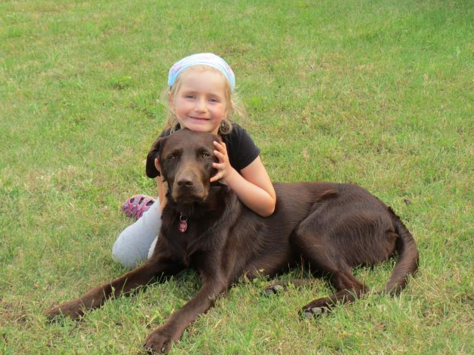

Hundebegegnungen für Senioren, Kinder und Menschen mit Behinderung.
In Einzel- und Gruppensitzungen.

Hund Scotti ist ein Labradoodle, eine Mischung aus Labrador und Großpudel, geboren am 26.04.2013 in Niederlauterbach in der Hallertau.
Scottis Lieblingsbeschäftigungen sind schlafen, gekrault werden, fressen und spielen mit seinen Hundefreunden.
Seit September 2016 hat Scotti eine "Azubine". Sie heißt Emma, ist am 29.6.2016 geboren und ebenfalls ein Labradoodle, allerdings hat sie ein apricotfarbenes Fell und wird nicht so groß wie Scotti.
Emma soll möglichst viel von Scotti lernen und ihn schon bald bei seinen Einsätzen begleiten und unterstützen. Wie man sieht sind sie ein Herz und eine Seele.
Mein Name ist Steffi Kostka und außer Scotti und Emma wohnen im Haushalt noch mein Mann
Hans und die drei Kinder
Johanna (
Für jeden Besuch versuche ich neue kleine Aufgaben an die Personen zu stellen, welche gerade in der Gruppe in den Gemeinschaftsräumen gut zu erfüllen sind. Die Personen sollen ganzheitlich aktiviert werden.
In Einzelsitzungen können ganz persönliche Aktionen mit den betreffenden Personen stattfinden, vom einfachen Anstupsen bis zu engem Körperkontakt. Durch diese Nähe und Wärme werden viele Sinne angesprochen und aktiviert.
Wenn die betreffende Person dazu in der Lage ist können zum Beispiel auch Kunststückchen selbständig beigebracht werden.
Sie sehen also, dass die Ansprüche über das bloße Streicheln hinausgehen – obwohl das auch ein sehr wichtiger und nicht zu unterschätzender Faktor in der Mensch-Hund-Begegnung ist. Der Hund ist in der Arbeit ein anderes Mittel, um die Menschen zu erreichen – im Mittelpunkt der Arbeit steht aber immer die Person mit ihren Bedürfnissen.
Die zentralen Ziele der Arbeit mit dem Hund sind:
Die Hunde sind absolut gesund, haben alle wichtigen Impfungen, werden regelmäßig entwurmt und bekommen eine Floh- und Zeckenprophylaxe. Scotti ist seit er 8 Wochen alt war bei mir, Emma seit sie 10 Wochen alt ist.
Scotti hat die Begleithundprüfung im Oktober 2014 erfolgreich bestanden, außerdem gehen wir in die Hundschule Socius.
Emma geht ebenfalls mit in die Hundeschule.
Auch wenn meine Hunde absolut lieb sind und eher flüchten würden als zu beißen, so sind sie doch Tiere und diese kann man nie zu 100 % vorhersagen. Daher sind sie haftpflichtversichert – dadurch werden sämtliche Schäden, die entstehen können, abgedeckt.
Da die Hunde völlig gesund sind und ich regelmäßig Prophylaxe betreibe, wird das gesundheitliche Risiko für die Personen minimiert.
Gerne können wir einen Termin zu einer kostenlosen Probestunde vereinbaren.
Einige Beispiele von der Arbeit mit Scotti und Emma.